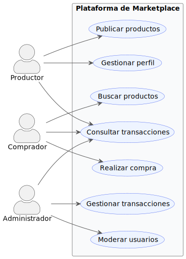

Presentación Semana 3
Metodologías Ágiles
LTI_05A_INS • Quinto Nivel • 2 Créditos
Ingeniería del Software
Prof. Charlie Cárdenas Toledo, M.Sc.
Octubre 2025 – Febrero 2026
Historias de Usuario, Casos de Uso y Criterios de Aceptación
Semana 3 • Unidad 2 • Validación y Trazabilidad de Requerimientos
Técnicas de elicitación, validación y administración de requerimientos
Objetivos de la Presentación
Caso de Estudio: Marketplace Agrícola para Productores Familiares
- Comprender los fundamentos de requerimientos del sistema aplicados al marketplace agrícola
- Dominar las historias de usuario en metodologías ágiles con ejemplos del productor y comprador
- Analizar los casos de uso como técnica UML formal para el sistema de comercialización
- Definir criterios de aceptación efectivos para funcionalidades del marketplace
- Aplicar métodos de validación y trazabilidad en el contexto agrícola rural
Contexto: El 84.5% de las UPAs ecuatorianas son agricultura familiar con acceso limitado a mercados justos
Conexión con Semana 2: Marketplace Agrícola
Recordatorio del Caso de Estudio
Sistema que conecta productores agrícolas familiares (84.5% de UPAs ecuatorianas) con compradores directos, eliminando intermediarios y proporcionando herramientas de gestión financiera
Semana 2: Requerimientos
- RF1: Registro de productores con GPS
- RF2: Catálogo dinámico con precios
- RF3: Sistema de cotizaciones directas
- RNF: Optimización para redes 2G/3G
Semana 3: Validación
- Historias de Usuario: Formato ágil
- Casos de Uso: Modelado UML
- Criterios de Aceptación: Medibles
- Trazabilidad: Gestión de cambios
Hoy aprenderemos: Cómo transformar los requerimientos de la semana 2 en historias de usuario, casos de uso y criterios de aceptación validables
Agenda
1. Fundamentos
Requerimientos del Sistema
2. Historias de Usuario
Enfoque Ágil
3. Casos de Uso
Técnica UML Formal
4. Validación
Métodos y Trazabilidad
Fundamentos: Requerimientos del Sistema
"Los requerimientos son las descripciones de lo que el sistema debe hacer, incluyendo los servicios que
ofrece y las restricciones en su operación" (Sommerville, 2011)
Técnicas Basadas en Escenarios
- Historias de Usuario: Enfoque ágil centrado en el valor del
usuario
- Casos de Uso: Técnica formal UML para modelar interacciones
- Criterios de Aceptación: Definición objetiva de "terminado"
Importancia Estratégica
Según Robertson y Robertson (1999), los requerimientos forman el contrato fundamental entre
cliente y desarrollador, estableciendo las bases para el éxito del proyecto y la satisfacción
del usuario final.
Validación vs Verificación
"Validación: ¿construimos el producto correcto? Verificación: ¿construimos bien el producto?"
VALIDACIÓN
"¿Construimos el producto correcto?"
Verificar que el software sea lo que el cliente requiere
Enfoque en necesidades del usuario
Pruebas de aceptación
Marketplace: ¿Los productores pueden vender más?
VERIFICACIÓN
"¿Construimos bien el producto?"
Verificar que el software cumpla especificaciones
Enfoque en calidad técnica
Pruebas unitarias e integración
Marketplace: ¿La app funciona en 3G?
Fuente: Boehm (1979)
Historias de Usuario: Enfoque Ágil
"La programación extrema (XP) es un método ágil en el cual los requerimientos del usuario se expresan
como historias, y cada historia se escribe en una tarjeta"
Características Principales
- Formato de tarjeta: Descripciones concisas
- Priorización del usuario: Cliente define importancia
- Entrada para planeación: Base del "juego de planeación" XP
- Descomposición en tareas: Estimación de esfuerzo
Formato Estándar
Como [tipo de usuario]
Quiero [realizar alguna acción]
Para [obtener algún beneficio]
Ejemplos Marketplace Agrícola
HU-01
Como productor agrícola
Quiero publicar mis productos con foto y precio
Para llegar a compradores directos sin intermediarios
HU-02
Como comprador
Quiero buscar productos por ubicación GPS
Para encontrar productores cercanos
Fuente: Sommerville (2011)
Historias de Usuario: Ventajas vs Desventajas
Ventajas
- Simplicidad: Fáciles de comprender por todos los
stakeholders
- Enfoque en usuario: Mantienen la perspectiva del cliente
como prioridad
- Agilidad: Permiten cambios rápidos según Beck (1999)
- Comunicación: Facilitan el diálogo continuo entre equipo y
cliente
Desventajas
- Brevedad problemática: La falta de detalle puede generar
ambigüedad
- Ambigüedad: Múltiples interpretaciones posibles del mismo
texto
- Falta de estructura: Ausencia de formato estándar riguroso
- Documentación limitada: Insuficiente para sistemas
complejos
Consideración Ética: Kamthan y Shahmir (2021) advierten que
"la ingeniería de historias de usuario puede ser sensible éticamente"
Casos de Uso: Técnica UML Formal
"Los casos de uso son una técnica de descubrimiento de requerimientos que se introdujo por primera vez
en el método Objectory. Ahora se ha convertido en una característica fundamental del modelado de
lenguaje unificado"
Componentes Clave
- Actores: Personas u otros sistemas
- Interacciones: Tipos específicos de intercambio
- Información adicional: Detalles de la interacción
Evolución Histórica
- 1993: Método Objectory
- UML: Incorporación estándar
- Actualidad: Técnica establecida
Fuente: Jacobson et al. (1993); Sommerville (2011)
Ejemplo Práctico: Marketplace Agrícola
"La agricultura familiar representa el 84.5% de las UPAs pero controla solo el 20% de la tierra"

Diagrama de Casos de Uso UML - Sistema de Marketplace para
Agricultura Familiar
Criterios de Aceptación: Contrato del Sistema
"Los criterios de aceptación forman parte del contrato del sistema y tienen que convenirse entre el
cliente y el desarrollador" (Sommerville, 2011)
Rol en Métodos Ágiles
- Responsabilidad del cliente: El cliente, como parte del
equipo, define las pruebas de aceptación
- Definición de pruebas: Determinan si el software soporta la
historia del usuario
- Bloqueo del avance: Según Beck (1999), "el desarrollo no
avanza hasta que se pasan estas pruebas"
- Validación continua: Verificación constante del cumplimiento
Características Esenciales
- Medibles y verificables: Deben poder evaluarse objetivamente
- Acordados mutuamente: Consenso entre cliente y desarrollador
- Base para pruebas: Fundamento del proceso de validación
- Criterios de pago: Determinan la aceptación contractual
Ejemplo: HU-01 Publicar Productos
CA1
El productor puede subir hasta 5 fotos por producto en menos de 30 segundos con conexión 3G
CA2
El sistema valida automáticamente que el precio esté dentro del rango de mercado regional (±20%)
CA3
La publicación aparece visible para compradores en un radio de 50km en menos de 2 minutos
Fuente: Sommerville (2011); Beck (1999)
Métodos de Validación
Revisiones e Inspecciones
Técnicas estáticas de V&V
- No requieren ejecutar software: Se analizan documentos y código
estáticamente
- Verificación de calidad: Sommerville (2011) indica que "se utilizan
para comprobar la calidad de los entregables"
- Cumplimiento de estándares: Aseguran que se siguieron los estándares de
calidad establecidos
Marketplace: Revisión de historias de usuario con productores reales para validar comprensión
Creación de Prototipos
Validación temprana
- Demostrar conceptos: Versión inicial para validar ideas fundamentales
- Probar opciones de diseño: Evaluar alternativas antes de la
implementación final
- Obtener información: "Obtener más información sobre el problema y sus
posibles soluciones" (Sommerville, 2011)
Marketplace: Prototipo de baja fidelidad probado con 10 productores en zona rural
Pruebas de Aceptación
"Las pruebas de aceptación constituyen la etapa final del proceso de pruebas antes de que el sistema
se acepte para uso operacional" (Sommerville, 2011)
Marketplace: Prueba piloto con 50 productores durante 2 semanas validando publicación de productos y búsqueda por ubicación
Fuente: Sommerville (2011)
Trazabilidad y Administración
"Es indispensable seguir la huella de las relaciones entre requerimientos, sus fuentes y el diseño del
sistema, de modo que usted pueda analizar las razones para los cambios propuestos, así como el efecto
que dichos cambios tengan probablemente sobre otras partes del sistema"
Componentes de Administración
- Identificación: Identificación única y referencias cruzadas
- Proceso de Cambio: Evaluación de impacto y costos
- Políticas de Seguimiento: Mantenimiento de registros
Beneficios
- Mapeo de dependencias
- Vinculación con arquitectura
- Documentación continua
- Gestión de cambios efectiva
Ejemplo de Trazabilidad: Marketplace Agrícola
| Stakeholder |
Historia Usuario |
Caso de Uso |
Componente |
| Productor rural |
HU-01: Publicar productos |
CU-01: Gestionar catálogo |
Módulo Publicación |
| Comprador |
HU-02: Buscar por GPS |
CU-02: Búsqueda geolocalizada |
Servicio Geolocalización |
Fuente: Sommerville (2011)
Importancia de la Trazabilidad
Beneficios Clave
- Gestión de cambios: Según Sommerville (2011), permite
"analizar las razones para los cambios propuestos"
- Verificación: Asegurar que todos los requerimientos se
implementen correctamente
- Auditoría: Demostrar cumplimiento de estándares y regulaciones
- Mantenimiento: Robertson y Robertson (1999) destacan que
facilita la evolución del sistema
Tipos de Trazabilidad
- Hacia adelante: Desde requerimientos hasta implementación y
pruebas
- Hacia atrás: Desde código hasta stakeholders y fuentes
originales
- Horizontal: Relaciones entre requerimientos del mismo nivel de
abstracción
"La trazabilidad es crucial en el proceso de validación porque los requerimientos deben ser
comprobables" (Sommerville, 2011)
Fuente: Robertson & Robertson (1999); Sommerville (2011)
Flujo Completo: Del Requerimiento a la Validación
Ejemplo Integrado: Publicación de Productos
| Fase |
Artefacto del Marketplace Agrícola |
| RF (Semana 2) |
RF1: El sistema permitirá registro de productores con ubicación GPS, tipos de cultivos y capacidad productiva mensual |
| Historia Usuario |
HU-01: Como productor agrícola, quiero publicar mis productos con foto y precio, para llegar a compradores directos sin intermediarios |
| Caso de Uso |
CU-01: Gestionar Catálogo de Productos (Actor: Productor | Flujo: Login → Subir foto → Ingresar datos → Publicar) |
| Criterios Aceptación |
CA1: Subir 5 fotos en <30s con 3G
CA2: Precio validado ±20% mercado regional
CA3: Visible en 50km en <2min
|
| Validación |
Prototipo: Probado con 10 productores rurales
Prueba Aceptación: Piloto 50 productores × 2 semanas
Métrica: 95% logró publicar en primer intento
|
| Trazabilidad |
RF1 → HU-01 → CU-01 → Módulo Publicación → Test_Publicacion.py → Productor Rural (Stakeholder) |
Clave: Cada fase se conecta y valida la anterior, asegurando que el sistema final resuelva el problema real del productor
Ciclo de Vida de Requerimientos
ELICITACIÓN
Historias
Casos de Uso
ESPECIFICACIÓN
Criterios de
Aceptación
VALIDACIÓN
Revisiones
Pruebas
GESTIÓN
Trazabilidad
Administración
Síntesis y Mejores Prácticas
Complementariedad de Enfoques
- Ágil: Beck (1999) propone historias de usuario para maximizar
flexibilidad y adaptación al cambio
- Formal: Jacobson et al. (1993) establecen casos de uso para
sistemas complejos y críticos
- Híbrido: Combinación estratégica según contexto y necesidades
del proyecto
Elementos Críticos de Éxito
- Criterios claros: Sommerville (2011) enfatiza que son "la base
fundamental para validación"
- Trazabilidad completa: Esencial para gestión efectiva de
cambios
- Validación continua: Detección temprana de problemas y
desviaciones
- Herramientas adecuadas: Soporte automatizado para
administración de requerimientos
Lecciones del Marketplace Agrícola
- Contexto importa: Los RNF de conectividad rural fueron tan críticos como los RF de publicación
- Validación temprana: El prototipo con 10 productores evitó 3 meses de desarrollo incorrecto
- Criterios medibles: "Subir foto en <30s con 3G" es verificable; "interfaz amigable" no lo es
- Trazabilidad salva proyectos: Cuando cambió el requisito de GPS, la matriz de trazabilidad identificó 12 componentes afectados
Reflexiones Finales
"La calidad de un sistema de software se determina en gran medida por la calidad de sus requerimientos y
la efectividad de su proceso de validación"
Preguntas para Considerar
- ¿Cómo balancear agilidad vs formalidad en el marketplace?
- ¿Qué técnicas usar para validar con productores rurales?
- ¿Cómo garantizar trazabilidad cuando los requerimientos cambian?
Desafío para Estudiantes
Piensa en tu proyecto: ¿Cómo aplicarías historias de usuario, casos de uso y criterios de aceptación? ¿Qué técnicas de validación serían más efectivas para tu contexto específico?
Criterio INVEST para Historias de Usuario
"Las buenas historias de usuario siguen el criterio INVEST"
Características INVEST
- Independent: Independiente de otras historias
- Negotiable: Flexible y discutible
- Valuable: Aporta valor al usuario
- Estimable: Se puede estimar esfuerzo
- Small: Pequeña y manejable
- Testable: Se puede probar
Análisis INVEST: Marketplace
✅ BUENA Historia (HU-01):
Como productor agrícola
Quiero publicar un producto con foto
Para atraer más compradores
✓ Independent: No depende de otras HU
✓ Negotiable: Puede ser 1-5 fotos
✓ Valuable: Aumenta ventas del productor
✓ Estimable: 3 días de desarrollo
✓ Small: Una funcionalidad específica
✓ Testable: Verificar subida de foto
❌ MALA Historia:
Como usuario quiero que el sistema funcione bien y sea rápido
Demasiado vaga, no es medible ni específica
Actividades Calificadas - Semana 3
Gestión de Práctica
PE-1.3 (2 puntos)
Validación con prototipo clicable + checklist. Con IA
- Crear prototipo clicable (Figma, Adobe XD, etc.)
- Validar con usuarios reales
- Usar herramientas de IA para análisis
- Completar checklist de validación
Trabajo Autónomo
TA-1.3 (2 puntos)
Historias de usuario con criterios de aceptación (INVEST)
- Redactar historias siguiendo formato estándar
- Aplicar criterio INVEST
- Definir criterios de aceptación claros
- Incluir estimación de esfuerzo
Gestión de Aprendizaje
GA-1.3 (1 punto)
Completar módulo 3 de ASC-5
Bibliografía
Bibliografía Básica
- Pressman, R. S. (2021). Ingeniería de software: un enfoque práctico.
McGraw-Hill Interamericana
- Sommerville, I. (2021). Engineering software products: an introduction to
modern software engineering. Pearson Education.
- Jiménez de Parga, C. (2021). UML: arquitectura de aplicaciones en Java, C++
y Python (2 ed.). RA-MA Editorial. Enlace
- Canosa Ferreiro, A. J. (2024). SCRUM: teoría e Implementación práctica
(1 ed.). RA-MA Editorial. Enlace
Bibliografía Complementaria
- Carullo, G. (2020). Implementing Effective Code Reviews: How to Build and
Maintain Clean Code. Apress Media LLC.
- Poulton, N. (2023). Docker Deep Dive. Nigel Poulton Ltd.
Fuentes ASU
- Arizona State University. (2025). ASU: SER-216 Software Enterprise
Processes and Quality. Information Technology Program. Online.
- Arizona State University. (2025). ASU: Inclusive Mindset: Tools for
Building Positive Team Culture. Information Technology Program. Online.